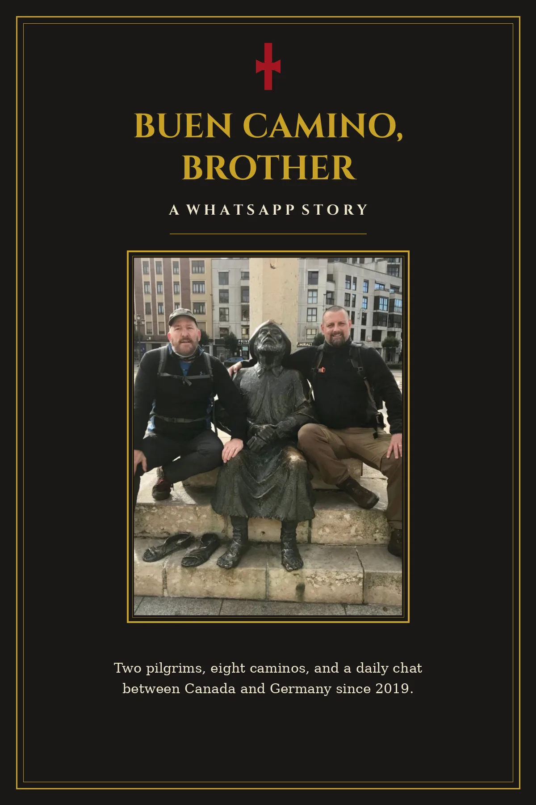

Shop
Two things, both ours: the book of the eight caminos, and the journal app Mike built from them.

Coming to Amazon in December
Buen Camino, Brother - The Ebook
$11.99 CAD · $9.99 USD · €8.99
A WhatsApp story - two pilgrims, eight caminos, and a daily chat between Canada and Germany since 2019.
Live on the App Store
Townstamp - The Journal App
Free to download · one-time unlock $6.99 CAD / $4.99 USD / €5.99
Mike's app: every entry stamped with the town and the date, photos kept with the words, a book-style PDF when you get home.
One list for both
Join Camino Dispatches and we will email you when the book lands on Amazon - plus app news and Camino 9 updates.